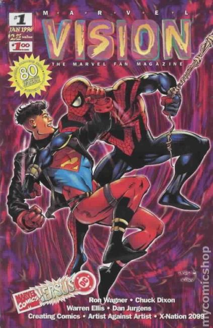

Series: 30 issues, fan magazine 1996
Publisher: Marvel
Cover by Dan Jurgens and Paul Neary
Issue #1
- Stan Lee writes of Marvel's 35 years of comic book journeys
- Article on Marvel Versus DC, with comments from Peter David, Ron Marz and Mark Gruenwald
- Dan Jurgens interview
- Article on the Age of Apocalypse toys
- Article on Spumco's Comic Book, with comments from John Kricfalusi
- Artist Vs. Artist: John Romita, Sr. and John Romita, Jr. draw the same piece of plot
- Article on the writing process, with comments from Warren Ellis
- Article on 'The Phoenix Resurrection,' with comments from editor Hank Kanalz
- Q & A with Chuck Dixon
- Marvel's Silliest Moments: the Spider-Mobile
- Q & A with Ron Wagner
- The Marvel Chronicles: 1939-1961
- Time Slip: The Thing illo by Kelley Jones
- Article on X-Nation 2099, with comments from Tom Peyer and John Francis Moore
- X-Nation character sketches by Humberto Ramos
- Article on Askani'son, with comments from editor Lisa Patrick, Scott Lobdell, Gene Ha, Jeph Loeb and Andrew Pepoy
- Fabian Nicieza describes how to keep the comic book sky from falling every day.